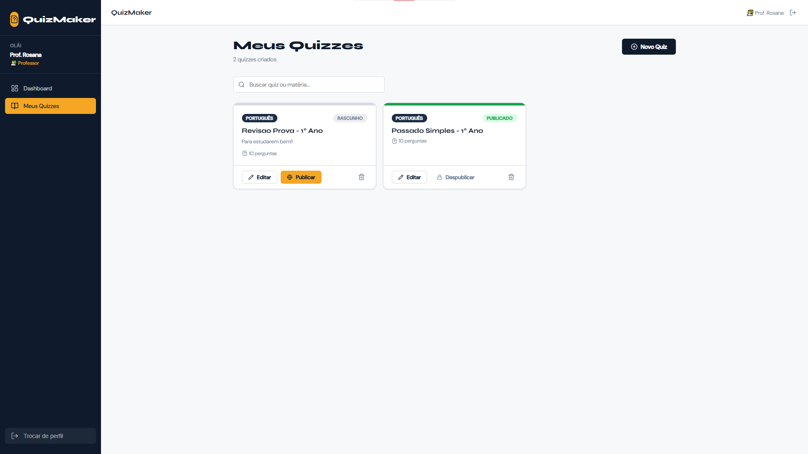
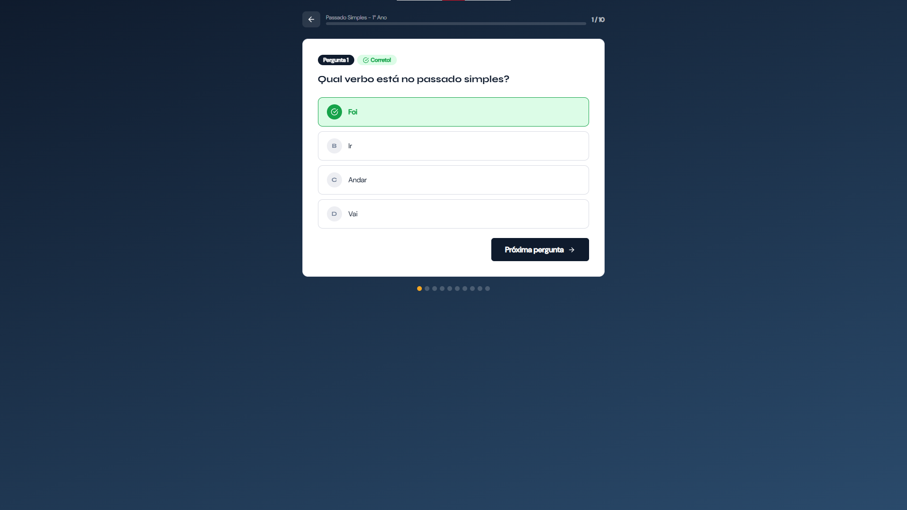
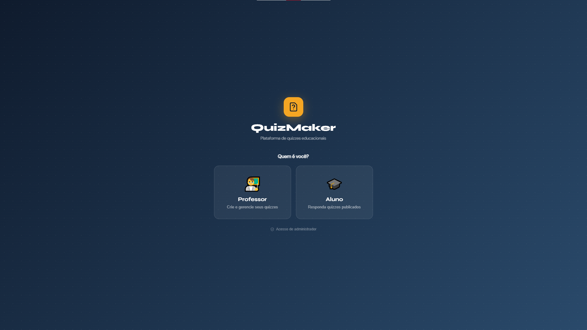

Portfólio do Software · 2026
Uma ferramenta criada para professores e estudantes criarem e responderem quizzes interativos de forma rápida, visual e engajadora — gamificando o aprendizado em sala de aula.
Acesso Direto
Acesse o QuizMaker e comece a usar agora mesmo
Entre na plataforma e escolha seu perfil — professor ou aluno — diretamente na tela inicial do sistema.
🚀 Abrir o sistema01 — Objetivo
O QuizMaker Educacional nasceu da ideia de transformar a avaliação escolar em um processo mais dinâmico, justo e motivador. Em vez de provas tradicionais e estáticas, o software permite que professores criem desafios interativos com feedback imediato para cada resposta.
Estudantes aprendem enquanto jogam, desenvolvendo autonomia, interesse pelo conteúdo e a capacidade de identificar seus próprios erros — tornando o aprendizado um ciclo contínuo e engajador.
O sistema é multiplataforma, acessível pelo navegador em qualquer dispositivo, e conta com painéis separados para professores, alunos e administradores, garantindo uma gestão pedagógica completa.
Democratizar o acesso a metodologias ativas de ensino, oferecendo uma plataforma gratuita, intuitiva e visualmente atraente para que professores de qualquer disciplina possam gamificar suas aulas — sem precisar de conhecimento técnico avançado.
02 — Funcionalidades
O QuizMaker possui três perfis distintos: Admin (gerencia professores e plataforma), Professor (cria e publica quizzes) e Aluno (responde e acompanha seu desempenho).



03 — Impacto
A democratização de ferramentas de ensino digital apoia metas fundamentais de desenvolvimento estabelecidas pela ONU na Agenda 2030.
Garantir metodologias de ensino inclusivas, equitativas e que promovam a aprendizagem ativa e moderna.
Fomentar o desenvolvimento tecnológico e o acesso à informação no ambiente escolar brasileiro.
Oferecer ferramentas gratuitas e acessíveis em qualquer dispositivo com conexão à internet.
Criar pontes entre a comunidade de tecnologia e a rede de ensino público e privado.
04 — BNCC
O uso do QuizMaker como metodologia ativa promove o desenvolvimento de competências e habilidades da BNCC, integrando diferentes áreas do conhecimento por meio de tecnologias digitais.
EF09CI13 — Os estudantes aplicam conhecimentos científicos ao resolver questões, analisando fenômenos e desenvolvendo o pensamento crítico.
Competência geral relacionada: 2 (Pensamento científico e crítico).
EF69LP44 — Uso e interpretação de conteúdos digitais, considerando linguagem, contexto e propósito comunicativo nos quizzes.
Competência geral relacionada: 4 (Comunicação).
O formato de quiz favorece a revisão ativa, a autonomia do estudante e o desenvolvimento de estratégias de aprendizagem.
Competência geral relacionada: 1 (Conhecimento).
Como expresso na BNCC (pág. 473 - 475), a preocupação com os impactos das transformações ocasionadas pela tecnologia na sociedade estão explíticas em diversas áreas, já se iniciando nas competências gerais para a Educação Básica e se tornando imprescindível a ampliação de tais etapas durante o Ensino Médio, dada a intrínseca relação entre as culturas juvenis e a cultura digital. Dessa forma, o projeto apresentado auxilia os estudantes a desenvolverem as seguintes habilidades:
Os estudantes desenvolvem raciocínio lógico e resolução de problemas ao interpretar questões, analisar alternativas e tomar decisões durante o uso do quiz.
Envolve as aprendizagens relativas às formas de processar, transmitir e distribuir a informação de maneira segura e confiável em diferentes artefatos digitais – tanto físicos (computadores, celulares, tablets etc.) como virtuais (internet, redes sociais e nuvens de dados, entre outros) –, compreendendo a importância contemporânea de codificar, armazenar e proteger a informação.
Envolve aprendizagens voltadas a uma participação mais consciente e democrática por meio das tecnologias digitais, o que supõe a compreensão dos impactos da revolução digital e dos avanços do mundo digital na sociedade contemporânea, a construção de uma atitude crítica, ética e responsável em relação à multiplicidade de ofertas midiáticas e digitais, aos usos possíveis das diferentes tecnologias e aos conteúdos por elas veiculados, e, também, à fluência no uso da tecnologia digital para expressão de soluções e manifestações culturais de forma contextualizada e crítica.
07 — Demonstração
Assista ao vídeo de demonstração e conheça o fluxo completo da plataforma — desde o cadastro de professores pelo Admin até a experiência do aluno respondendo um quiz com feedback instantâneo.
O vídeo documenta as telas principais, os recursos de gamificação e o impacto do sistema no engajamento dos estudantes.
🌐 Acessar ao vivo